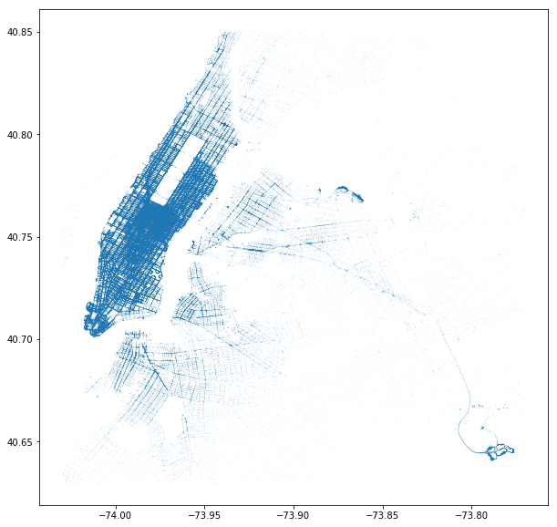
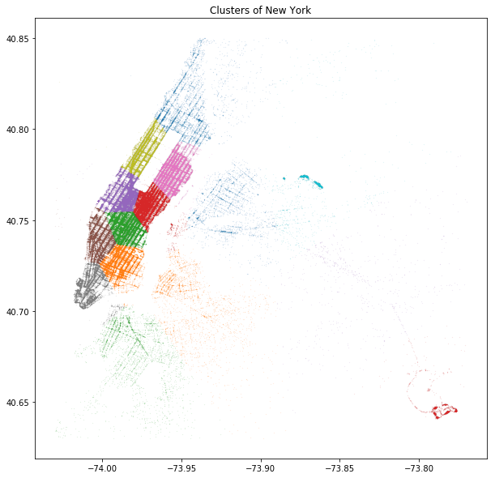
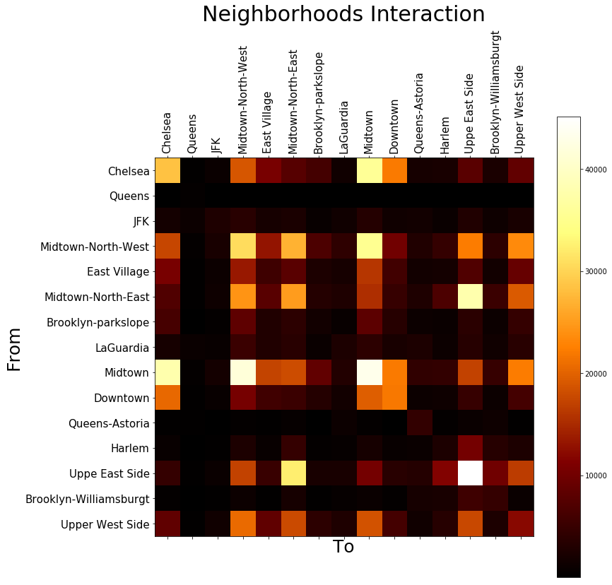
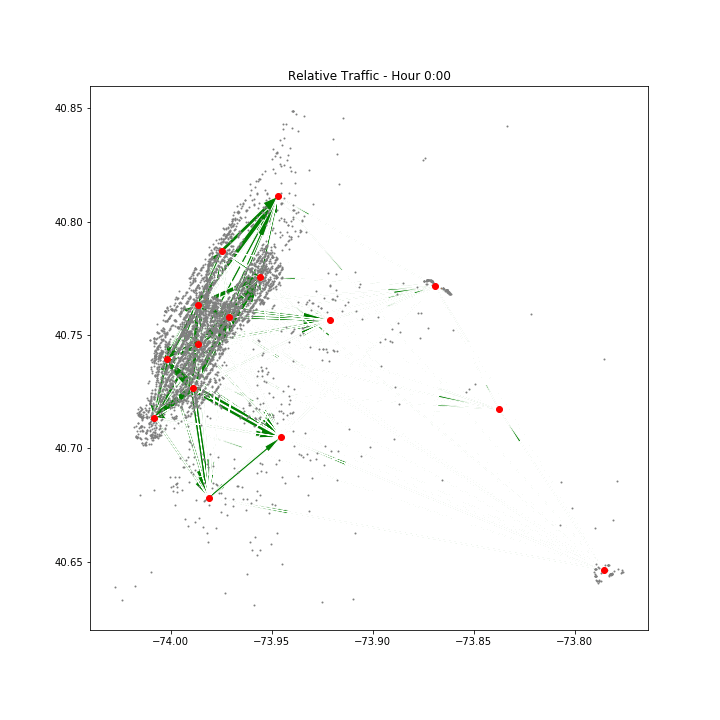

Where Should Taxi Go
TDI Project Proposal
Wenyu Wang  PhD @ Purdue with
PhD @ Purdue with  Data Science
Data Science
Wenyu Wang  PhD @ Purdue with
PhD @ Purdue with  Data Science
Data Science
Taxis are not full-pack all the time. Check here
Idle taxis:  efficiency,
efficiency,  Traffic-Jam
Traffic-Jam
Problem: where should taxi go after a drop?
Solution: given any position & time, suggest where an empty cab to go?



